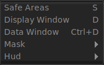

The View Menu

The View Window allows toggling of safe areas for titles and action.
The Display Window option allows toggling of the Display Area Window when that differs from the Data Window. This is a feature of OpenEXR images.
The Data Window option allows toggling the square around the data window of OpenEXR images when that window differs from the Display Area Window.
The Texture Filtering toggle allows you to switch on and off the texture filtering of the display in mrViewer. When the image is zoomed in or out, texture filtering will use bilinear filtering and smooth out the bright/dark edges somewhat.
The Mask submenu allows toggling on and off film and photographic masks to display your movies in a letterbox format, for example. This setting works in tandem with the one in the menu.
The HUD (Heads Up Display) allows toggling on and off some text information from the view window. You can display file, path, frame, unshown frames (uf), frames per second (fps), etc. This setting can also be set permanently in the menu.